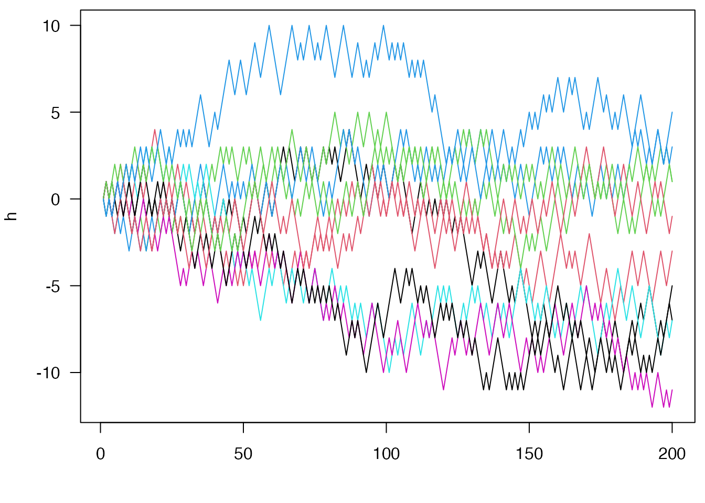

vignettes/ring_applications.Rmd
ring_applications.RmdThe bytes-based ring buffer in the main vignette is a better data structure to implement the simulation than the environment buffer is because the expected elements in each entry of the buffer are the same. But with a bit of S3 syntactic sugar we can do a bit better. This vignette is an attempt at creating “ring” versions of a vector and matrix data type.
NOTE: this vignette used to be implemented in the package itself, but I pulled it out of the package because I felt that the implementation wasn’t quite right, and that it may not be ideal to have objects that appear to have normal-R semantics operate by side effect. However, this may give some ideas for how to use ring buffers in practice.
The actual code for the buffer here is available in the package via
system.file("examples/ring_vector.R", package = "ring")
(the path depends on your R and package installations).
## Simulate an atomic vector or matrix with a ring buffer. These
## functions exist mostly as an example of use of a ring buffer
## designed to work with R functions that do not know (or care) that
## the object is implemented with a ring buffer behind the scenes.
## Elements will be added at the end of the vector and taken from the
## beginning.
##
## Note that because the matrix is stored row-wise but R stores
## matrices column wise, there is a lot of data transposing going on
## here. If something like this was needed for performance then
## you'd want to redo this with column storage.
##
## The `push` function is generic and can be used to push
## elements onto either a `ring_vector` or a `ring_matrix`.
##
## Note that these are implemented more as proof-of-concepts rather
## than really robust data types.
##
## * `length_max`: The maximum number of elements
## * `type`: The type of storage. Can be "logical", "integer",
## "double", or "complex"
## * `environment`: Logical indicating if we should use an environment
## buffer (`ring_buffer_env`) or a bytes buffer
## (`ring_buffer_bytes`).
ring_vector <- function(length_max, type, environment = TRUE) {
type <- match.arg(type, names(create))
if (environment) {
buf <- ring::ring_buffer_env(length_max)
} else {
buf <- ring::ring_buffer_bytes_typed(length_max, type, 1L)
}
ret <- list(buf = buf, length_max = as.integer(length_max),
type = type, environment = environment)
class(ret) <- "ring_vector"
ret
}
ring_vector_push <- function(buffer, data, check = TRUE, ...) {
if (check) {
ring_vector_compatible(buffer, data)
}
buffer$buf$push(data)
}
ring_vector_compatible <- function(x, data) {
if (storage.mode(data) != x$type) {
stop("Expected storage.mode of ", x$type)
}
TRUE
}
ring_vector_get <- function(x, i = NULL) {
if (is.null(i)) {
ret <- x$buf$read(x$buf$used())
if (x$environment) {
if (length(ret) == 0L) {
ret <- create[[x$type]]()
} else {
ret <- unlist(ret)
}
}
} else {
len <- x$buf$used()
i <- ring_vector_index(i, len)
ret <- create[[x$type]](length(i))
for (j in seq_along(i)) {
k <- i[[j]]
ret[j] <- if (k <= len) x$buf$tail_offset(k - 1L) else NA
}
}
ret
}
ring_vector_index <- function(i, len) {
if (is.logical(i)) {
if (length(i) < len) {
i <- rep_len(i, len)
}
i <- which(i)
} else if (!is.numeric(i)) {
stop("Invalid type for index")
} else if (any(i < 0)) {
i <- seq_len(len)[i]
}
i
}
## S3 support:
push <- function(buffer, data, ...) {
UseMethod("push")
}
push.ring_vector <- ring_vector_push
length.ring_vector <- function(x, ...) {
x$buf$used()
}
`[[.ring_vector` <- `[.ring_vector` <- function(x, i, ...) {
if (missing(i)) {
ring_vector_get(x, NULL)
} else {
ring_vector_get(x, i)
}
}
c.ring_vector <- function(..., recursive = TRUE) {
if (!inherits(..1, "ring_vector")) {
args <- list(...)
i <- vapply(args, inherits, logical(1), "ring_vector")
args[i] <- lapply(args[i], as.matrix)
eval(as.call(c(quote(rbind), args)))
} else {
x <- ..1
args <- list(...)[-1]
lapply(args, ring_vector_compatible, x = x)
for (m in args) {
ring_vector_push(x, m)
}
x
}
}
## Support functions; these are functions used to create empty storage
## for the bytes buffers
create <- list(logical = logical,
integer = integer,
double = double,
complex = complex)
registerS3method("[", "ring_vector", `[.ring_vector`, environment())
registerS3method("[[", "ring_vector", `[[.ring_vector`, environment())
registerS3method("length", "ring_vector", length.ring_vector, environment())
registerS3method("c", "ring_vector", c.ring_vector, environment())Then create an integer ring vector of length 5:
v <- ring_vector(5, "integer", FALSE)Convert back out to be an R vector (involves a copy)
v[]## integer(0)To add things to the vector, use the push generic:
push(v, 1L)
v[]## [1] 1This can push multiple items on at once:
push(v, 2:4)
v[]## [1] 1 2 3 4
length(v)## [1] 4Random read access works:
v[3]## [1] 3
v[[1]]## [1] 1Resetting the buffer zeros this all:
v$buf$reset()## NULL
length(v)## [1] 0Returning to the simulation example from the main vignette:
buf <- ring_vector(5, "integer", FALSE)
h <- integer(20)
x <- 0L
push(buf, x)
h[1L] <- x
step <- function(x) {
if (runif(1) < 0.5) x - 1L else x + 1L
}
set.seed(1)
for (i in seq_len(length(h) - 1L)) {
x <- step(x)
push(buf, x)
h[i + 1L] <- x
}The whole history:
h## [1] 0 -1 -2 -1 0 -1 0 1 2 3 2 1 0 1 0 1 0 1 2 1The last 5 steps:
buf[]## [1] 1 0 1 2 1Now, rewriting again, this time with the step function taking the
buffer itself. This simplifies the implementation, with most of the
details being handled by the S3 methods for length,
push and [.
step <- function(x) {
if (length(x) > 1) {
p <- mean(diff(x[])) / 2 + 0.5
} else {
p <- 0.5
}
if (runif(1) < p) x[length(x)] - 1L else x[length(x)] + 1L
}
buf <- ring_vector(5, "integer", FALSE)
h <- integer(100)
x <- 0L
push(buf, x)
h[1L] <- x
set.seed(1)
for (i in seq_len(length(h) - 1L)) {
x <- step(buf)
push(buf, x)
h[i + 1L] <- x
}
par(mar=c(4, 4, .5, .5))
plot(h, type="l", xlab="step", ylab="y", las=1)ring_matrix
The ring_matrix data structure generalises the
ring_vector; it is a buffer that looks to R like a matrix
that grows by adding rows at the bottom and shrinks by consuming rows at
the top.
## * `nr_max`: The maximum number of rows
## * `nc`: The number of columns in the matrix
ring_matrix <- function(nr_max, nc, type, environment = TRUE) {
type <- match.arg(type, names(ring:::sizes))
if (environment) {
buf <- ring::ring_buffer_env(nr_max)
} else {
buf <- ring::ring_buffer_bytes_typed(nr_max, type, nc)
}
ret <- list(buf = buf, nr_max = as.integer(nr_max), nc = as.integer(nc),
type = type, environment = environment)
class(ret) <- "ring_matrix"
ret
}
ring_matrix_push <- function(buffer, data, check = TRUE, ...) {
if (check) {
ring_matrix_compatible(buffer, data)
}
if (buffer$environment) {
if (is.matrix(data)) {
for (i in seq_len(nrow(data))) {
buffer$buf$push(data[i, ], FALSE)
}
} else {
buffer$buf$push(data, FALSE)
}
} else {
buffer$buf$push(if (is.matrix(data)) t(data) else data)
}
}
ring_matrix_compatible <- function(x, data) {
if (storage.mode(data) != x$type) {
stop("Expected storage.mode of ", x$type)
}
if (is.matrix(data)) {
if (ncol(data) != x$nc) {
stop(sprintf("Expected a matrix of '%d' columns", x$nc))
}
} else {
if (length(data) != x$nc) {
stop(sprintf("Expected a matrix of '%d' columns", x$nc))
}
}
TRUE
}
ring_matrix_get <- function(x, i = NULL) {
if (is.null(i)) {
dat <- x$buf$read(x$buf$used())
if (x$environment) {
if (length(dat) == 0L) {
dat <- create[[x$type]]()
} else {
dat <- unlist(dat)
}
}
ret <- matrix(dat, ncol = x$nc, byrow = TRUE)
} else {
len <- x$buf$used()
i <- ring_vector_index(i, len)
ret <- matrix(create[[x$type]](length(i) * x$nc), length(i), x$nc)
for (j in seq_along(i)) {
k <- i[[j]]
ret[j, ] <- if (k <= len) x$buf$tail_offset(k - 1L) else NA
}
}
if (!is.null(x$colnames)) {
colnames(ret) <- x$colnames
}
ret
}
## S3 support
push.ring_matrix <- ring_matrix_push
dim.ring_matrix <- function(x, ...) {
c(x$buf$used(), x$nc)
}
head.ring_matrix <- function(x, n = 6L, ...) {
head.matrix(x, n, ...)
}
tail.ring_matrix <- function(x, n = 6L, ...) {
tail.matrix(x, n, FALSE, ...)
}
`[.ring_matrix` <- function(x, i, j, ..., drop = TRUE) {
if (missing(i)) {
if (missing(j)) {
ring_matrix_get(x, NULL)
} else {
ring_matrix_get(x, NULL)[, j, drop = drop]
}
} else if (is.matrix(i)) {
if (!missing(j)) {
stop("subscript out of bounds") # same error as [.matrix
}
j <- sort(unique(i[, 1L]))
ring_matrix_get(x, j)[cbind(match(i[, 1L], j), i[, 2L])]
} else {
ring_matrix_get(x, i)[, j, drop = drop]
}
}
dimnames.ring_matrix <- function(x, ...) {
if (is.null(x$colnames)) {
NULL
} else {
list(NULL, x$colnames)
}
}
`dimnames<-.ring_matrix` <- function(x, value) {
if (is.null(value)) {
x$colnames <- NULL
} else if (!is.list(value) || length(value) != 2L) {
stop("Invalid input for dimnames")
} else {
if (!is.null(value[[1L]])) {
stop("Cannot set rownames of a ring matrix")
}
val <- value[[2L]]
if (!is.null(val) && length(val) != x$nc) {
stop("Invalid length dimnames")
}
x$colnames <- val
}
x
}
as.matrix.ring_matrix <- function(x, ...) {
ring_matrix_get(x, NULL)
}
cbind.ring_matrix <- function(...) {
stop("It is not possible to cbind() ring_matrices (use as.matrix first?)")
}
rbind.ring_matrix <- function(...) {
if (!inherits(..1, "ring_matrix")) {
args <- list(...)
i <- vapply(args, inherits, logical(1), "ring_matrix")
args[i] <- lapply(args[i], as.matrix)
eval(as.call(c(quote(rbind), args)))
} else {
x <- ..1
args <- list(...)[-1]
lapply(args, ring_matrix_compatible, x = x)
for (m in args) {
ring_matrix_push(x, m)
}
x
}
}
length.ring_matrix <- function(x) {
x$buf$used() * x$nc
}
registerS3method("[", "ring_matrix", `[.ring_matrix`, environment())
registerS3method("dim", "ring_matrix", dim.ring_matrix, environment())
registerS3method("dimnames", "ring_matrix", dimnames.ring_matrix, environment())
registerS3method("dimnames<-", "ring_matrix", `dimnames<-.ring_matrix`,
environment())
registerS3method("as.matrix", "ring_matrix", cbind.ring_matrix, environment())
registerS3method("cbind", "ring_matrix", cbind.ring_matrix, environment())
registerS3method("rbind", "ring_matrix", rbind.ring_matrix, environment())This is even more contrived than above, but consider simultaneously
simulating the movement of n random particles with the same
reflecting random walk as above. First create a 10 x 5 ring matrix:
n <- 10
m <- ring_matrix(5, n, "integer", FALSE)The current state of the matrix is:
m[]## [,1] [,2] [,3] [,4] [,5] [,6] [,7] [,8] [,9] [,10]We can set the initial state as:
push(m, matrix(0L, 1, n))
m[]## [,1] [,2] [,3] [,4] [,5] [,6] [,7] [,8] [,9] [,10]
## [1,] 0 0 0 0 0 0 0 0 0 0
step <- function(m) {
if (nrow(m) > 1) {
p <- colMeans(diff(m[])) / 2 + 0.5
} else {
p <- rep(0.5, ncol(m))
}
m[nrow(m), ] + as.integer(ifelse(runif(length(p)) < p, -1, 1L))
}
m <- ring_matrix(5, n, "integer", FALSE)
x <- rep(0L, n)
push(m, x)
h <- matrix(NA, 200, n)
h[1, ] <- x
set.seed(1)
for (i in seq_len(nrow(h) - 1L)) {
x <- step(m)
push(m, x)
h[i + 1L, ] <- x
}
par(mar=c(4, 4, .5, .5))
matplot(h, type="l", lty=1, las=1)